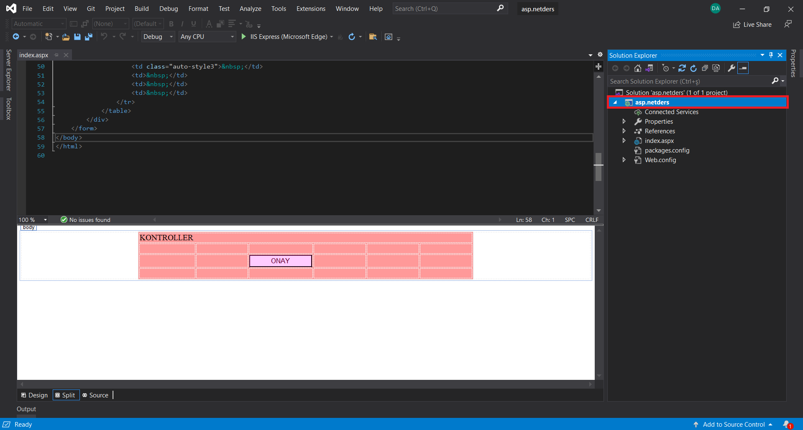
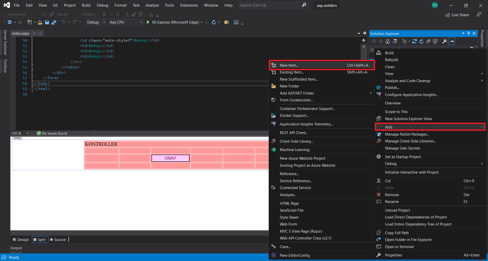
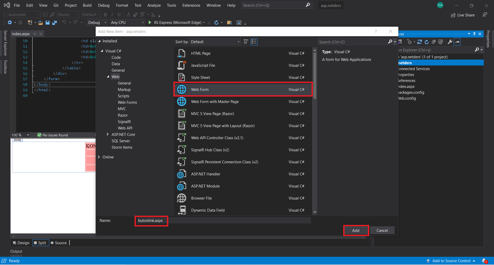
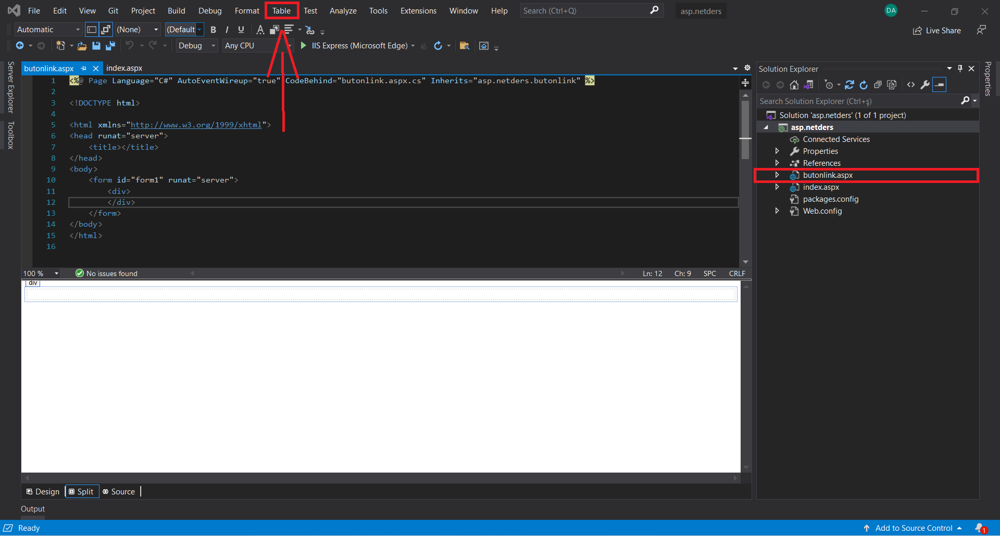
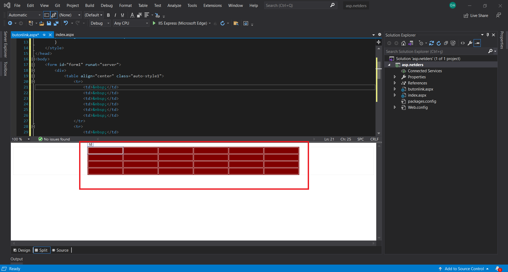
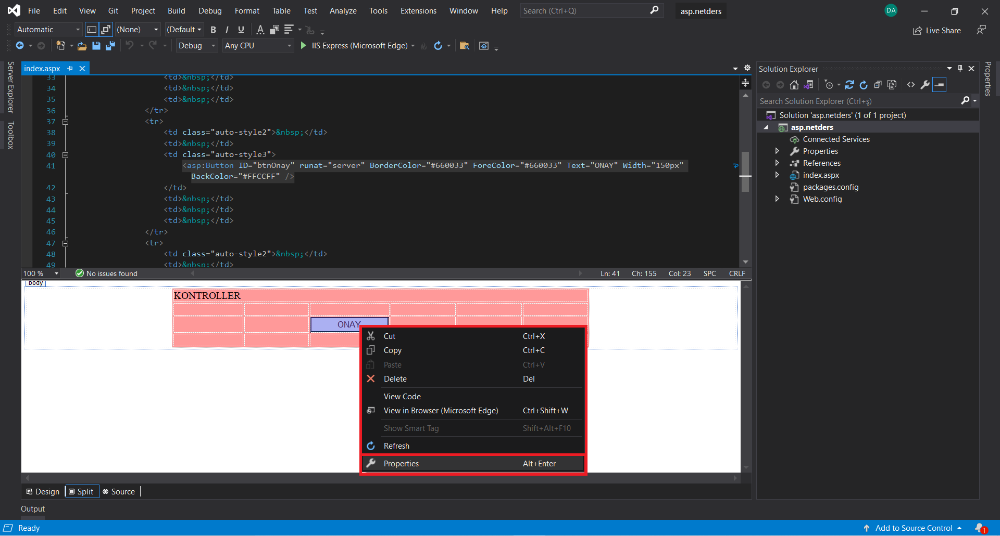
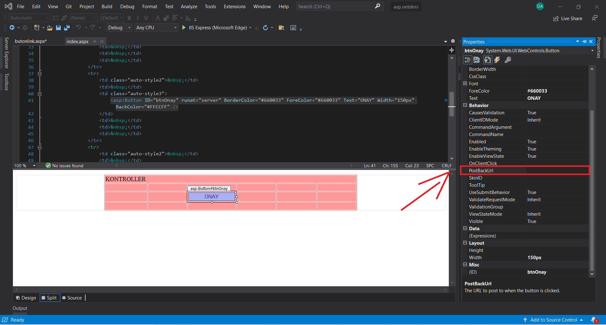
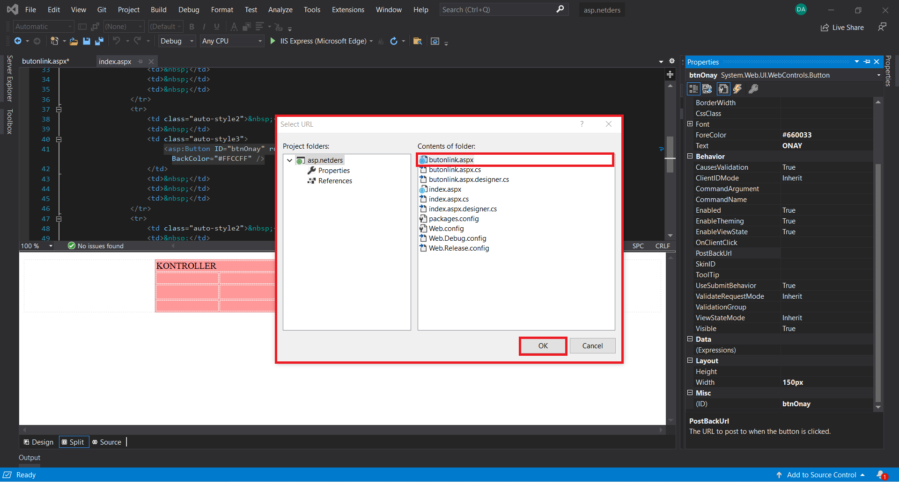

Merhaba arkadaşlar. Bu derste sizlere Butona Nasıl Link Verilir? bunu göstereceğim. Hazırsanız başlayalım.
Butona Nasıl Link Verilir?
Önceki dersin devamı olarak atıyorum. Bir önceki dersimizde buton oluşturmayı görmüştük. Peki bu butona nasıl link veririz beraber bakalım. Öncelikle butonun basınca bize getireceği sayfayı açmamız lazım ki iki sayfayı birbirine bağlayalım. Sol tarafta dosyamı buluyorum ve üstüne sağ tıklıyorum.

Daha sonra Add kısmından New İtem... diyorum ve yeni bir sayfa oluşturuyorum.

Unutmayın ki web form üzerinden çalışıyoruz bu nedenle html page yerine web form'u seçiyoruz, alt kısımdan .aspx uzantısını silmemek şartıyla yeni bir ad veriyoruz. Ben adına butonlink.aspx dedim.

Daha sonra oluşturduğum sayfaya bir tablo eklicem ki butona basınca sayfanın değiştiğini ve oluşturduğum tablonun karşıma geldiğini görebilin. Yukarıdaki table kısmından oluşturuyorum. Bilmeyenler önceki derslere gidebilir yada buradan öğrenebilir.

Oluşturmuş olduğum tablo bu şekilde, sadece diğer tablodan farklı olsun yeter.

Şimdi diğer sayfamıza geliyoruz ve butonumuzun üstüne sağ tıklayıp properties kısmına tıklıyoruz.

Yanda gelen kısımdan PostBackUrl kısmını buluyoruz ve tıklıyoruz.

Karşınıza böyle bir ekran gelicek ve gelen ekrandan önceki oluşturmuş olduğum sayfayı seçiyorum.

Seçtiğim sayfanın bağlantısı bu şekilde eklenmiş olucak. Daha sonra çalıştırıp butona bastığınızda sayfalar arasında geçiş yaptığını görebilirsiniz.

Bu yazının sahibi : Derya Acar